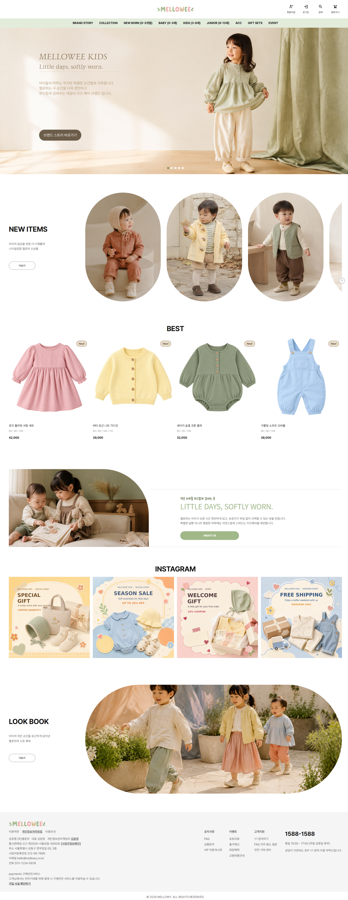
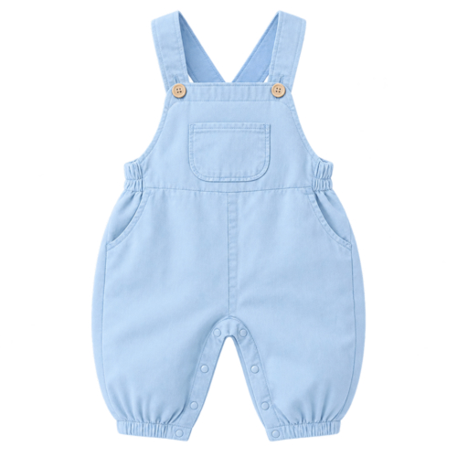
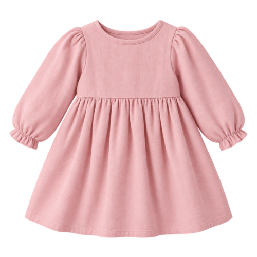
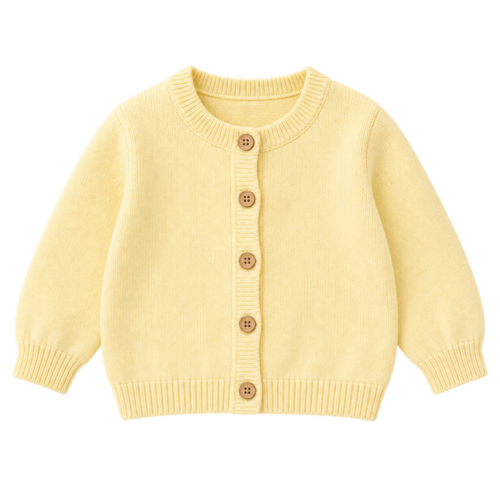
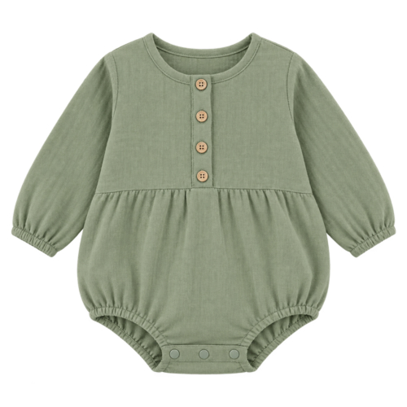
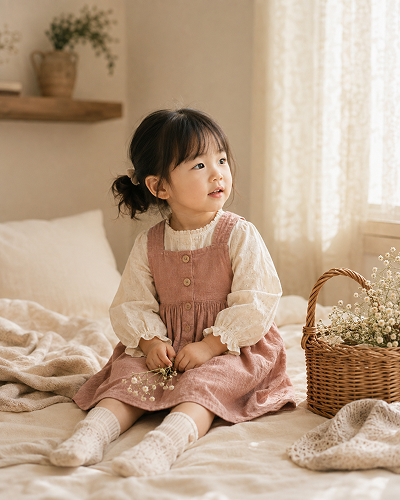
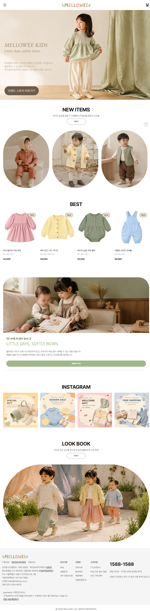
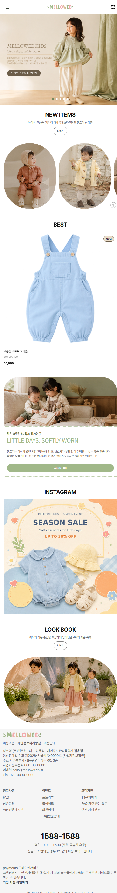
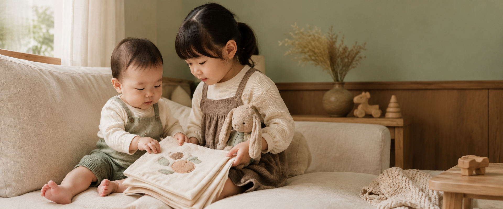
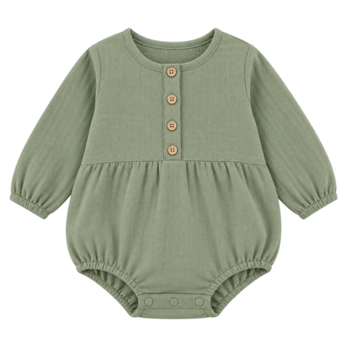

어떤 브랜드인지
한눈에 알기 어려워요.
상품을 나열하는 것만으로는 브랜드가 추구하는 편안함과 따뜻한 일상을 충분히 전달하기 어렵습니다.
Figma로 설계한 디자인을 기반으로 HTML, CSS, JavaScript를 활용해 구현한 반응형 웹사이트 프로젝트입니다. PC, 태블릿, 모바일 환경에 맞춰 레이아웃과 콘텐츠를 조정하여 다양한 화면에서도 안정적인 사용자 경험을 제공하도록 제작했습니다.
아동복 쇼핑몰 웹사이트
MELLOWEE KIDS
편안한 옷과 따뜻한 일상의 감성을 연결한 키즈웨어.
브랜드의 분위기부터 상품을 고르는 과정까지,
멜로위의 방향을 하나의 웹 경험으로 정리했습니다.

귀여움 너머, 선택에 필요한 기준.
보호자가 아이의 옷을 고를 때 마주할 수 있는 고민을 바탕으로, 브랜드 표현과 정보 전달의 방향을 설정했습니다.
상품을 나열하는 것만으로는 브랜드가 추구하는 편안함과 따뜻한 일상을 충분히 전달하기 어렵습니다.
연령과 상품군의 구분이 명확해야 수많은 상품 사이에서 필요한 아이템을 쉽게 좁힐 수 있습니다.
착용 모습과 함께 가격, 사이즈, 소재 등의 정보를 확인할 수 있어야 선택에 대한 부담이 줄어듭니다.
아이의 편안함과 자신의 취향을 함께 생각하는 보호자.
짧은 시간 안에 필요한 상품을 살펴보고, 아이가 입었을 때의 모습과 실용성을 함께 확인하는 사용자를 설정했습니다.
34세 · 직장인
3세 아이를 둔 보호자
“아이에게 편하고,
내 취향에도 맞는 옷을
쉽게 고르고 싶어요.”
모바일 쇼핑 중심
차분한 색감 · 실용적인 디자인 선호
출퇴근 시간이나 쉬는 시간에 모바일로 신상품과 필요한 아이템을 확인합니다.
아이의 활동을 방해하지 않는 옷과 자연스럽게 어울리는 차분한 색감을 선호합니다.
연령에 맞는 상품을 찾기 어렵거나 사이즈 정보가 부족하면 구매를 망설입니다.
착용 이미지, 가격, 사이즈를 비교한 뒤 일상에 잘 맞는 상품을 선택하고 싶어 합니다.
* 사용 경험을 구체화하기 위해 설정한 기획용 가상 페르소나입니다.
분위기에서 탐색으로, 탐색에서 선택으로.
브랜드를 처음 만나는 순간부터 상품을 이해하는 단계까지, 사용자가 자연스럽게 다음 행동으로 이어지도록 구성했습니다.
아이의 일상 이미지와 부드러운 컬러를 통해 편안하고 따뜻한 브랜드 인상을 형성합니다.
연령별 메뉴와 신상품·베스트 구분으로 필요한 상품을 찾아가는 경로를 명확히 합니다.
상품 이미지와 가격, 사이즈·컬러 옵션을 단계적으로 제공하여 선택에 필요한 정보를 전달합니다.
자연의 색을 닮은, 차분한 온도.
세이지를 중심으로 핑크와 베이지를 더했습니다. 밝은 배경과 짙은 본문 컬러가 이미지의 부드러움과 정보의 선명함을 함께 받쳐줍니다.
#A1B889Primary · 브랜드 포인트
#F3AAACSecondary · 따뜻한 감성
#D7BA92Secondary · 자연스러운 무드
#F2F7EESurface · 부드러운 배경
#121212Text · 정보의 선명함
밝은 컬러는 배경과 시각적 포인트에 사용하고, 본문은 짙은 색으로 표현해 읽기 편한 대비를 유지합니다.
감성은 부드럽게, 정보는 또렷하게.
정보를 전달하는 기본 서체와 브랜드 감성을 표현하는 포인트 서체를 구분하고, 화면 크기에 맞춰 텍스트의 위계를 조정했습니다.
가나다라마바사아자차카타파하
ABCDEFGHIJKLMNOPQRSTUVWXYZ
0123456789
PC·태블릿의 기본 서체로 사용하여
한글과 영문 정보를 일관되게 전달합니다.
| TEXT STYLE | PC | TABLET | MOBILE |
|---|---|---|---|
| H1 | 39.1 | 34.2 | 29.3 |
| H2 | 31.2 | 27.3 | 23.4 |
| H3 | 25 | 21.9 | 18.8 |
| H4 | 20 | 17.5 | 15 |
| Body 1 | 16 | 14 | 12 |
단위 px · 사이트 CSS의 rem과 기본 글자 크기로 계산.
모바일: Roboto / Pretendard · 브랜드 포인트: Mabook
브랜드를 느끼며, 상품을 발견하는 흐름.
메인 페이지에서 브랜드 인상과 상품 탐색을 연결하고, 상품 목록·상세·브랜드 스토리 페이지로 경험을 확장합니다.

메인 비주얼, 신상품, 베스트 상품, 브랜드 소개와 룩북을 통해 브랜드 감성을 상품 탐색과 연결합니다.
카테고리와 상품 정렬을 활용하여 연령과 구매 기준에 맞는 상품을 탐색하도록 구성합니다.
착용 이미지, 사이즈·컬러 옵션, 상세 설명과 가이드를 통해 구매 판단에 필요한 정보를 제공합니다.
소재, 핏, 색에 대한 이야기를 전하며 편안함을 중요하게 생각하는 브랜드 방향을 보여줍니다.
작은 표현까지, 하나의 브랜드처럼.
부드러운 이미지 형태와 정돈된 정보 배치를 반복해 페이지 전체의 분위기를 일관되게 이어갑니다.
생활 속 아이의 모습을 넓은 비주얼로 보여주고, 상단의 연령별 메뉴로 상품을 찾아가는 출발점을 제공합니다.
LIFESTYLE IMAGE · AGE CATEGORY



상품 이미지를 중심으로 이름, 사이즈, 가격을 일정한 순서로 배치해 여러 아이템을 차분하게 살펴볼 수 있도록 구성했습니다.
PRODUCT IMAGE · CONSISTENT ALIGNMENT
둥근 이미지 프레임과 세이지 포인트를 반복하며 멜로위의 따뜻한 인상을 유지합니다. 브랜드 소개에서 상세한 이야기로 자연스럽게 연결합니다.
ROUNDED SHAPE · SAGE ACCENT작은 하루를 위한 편안함.
그 감성을 웹에서도 자연스럽게.
브랜드 기획부터 UI 디자인, 반응형 설계와 퍼블리싱까지 연결한 키즈웨어 쇼핑몰 프로젝트입니다.
MELLOWEE
Soft experience across devices
PC에서 모바일까지 브랜드의 따뜻한 분위기와 상품 탐색 흐름이 자연스럽게 이어지도록 화면별 정보 밀도와 레이아웃을 조정했습니다.
MELLOWEE는 특별한 날보다 평범한 하루에 자연스럽게 스며드는 키즈웨어를 제안합니다. 아이에게는 편안함을, 보호자에게는 부담 없는 선택 경험을 전달하는 것이 브랜드의 출발점입니다.
부드러운 소재와 여유로운 핏으로 아이의 자유로운 움직임을 생각합니다.
빠르게 변하는 유행보다 일상에 오래 어울리는 디자인을 지향합니다.
소재와 핏, 마감에서 구매 정보까지 보호자의 관점으로 설계합니다.
키즈웨어 구매자는 짧은 시간 안에 디자인뿐 아니라 연령, 사이즈, 소재, 활동성, 가격까지 함께 판단해야 합니다. 감성적인 브랜드 경험과 명확한 구매 정보 사이의 균형이 필요했습니다.
많은 카테고리 속에서 아이의 연령에 맞는 상품을 빠르게 찾기 어렵습니다.
소재, 사이즈, 세탁 정보가 흩어져 있어 구매 판단에 시간이 걸립니다.
작은 버튼과 복잡한 옵션 영역은 이동 중 쇼핑의 흐름을 끊습니다.
이전에 살펴본 상품을 다시 찾아 비교하는 과정이 번거롭습니다.
실제 인터뷰가 아닌 프로젝트 설계를 위한 가상 사용자입니다. 모바일 중심의 탐색 행동과 키즈웨어 구매 기준을 바탕으로 핵심 사용자를 구체화했습니다.
Primary Persona
사무직 직장인 · 배우자와 4세 아이
수도권 거주 · 모바일 쇼핑 중심
“아이에게 편안하면서도 일상에서 자연스럽게 입힐 수 있는 옷을 빠르고 쉽게 찾고 싶어요.”
아이에게 맞는 상품을 쉽게 발견하고, 필요한 정보를 명확하게 비교한 뒤, 모바일에서도 빠르고 편리하게 구매할 수 있는 경험을 목표로 했습니다.
NEW BORN부터 JUNIOR까지 연령 기준으로 메뉴를 단순화했습니다.
가격, 할인, 적립금과 핵심 상품 정보를 일정한 순서로 제공합니다.
필수 옵션과 Size Guide로 사이즈 선택의 불안을 줄였습니다.
기기별 정보 위계와 터치 영역을 조정해 구매 흐름을 유지했습니다.
세이지 그린을 중심으로 소프트 핑크와 웜 베이지가 균형을 이루도록 구성했습니다. 상품 이미지를 방해하지 않는 크림과 뉴트럴 컬러로 정보 영역을 정돈했습니다.
Pretendard와 Roboto로 상품 정보를 명확하게 전달하고, Mabook을 브랜드 메시지에 제한적으로 사용해 부드러운 인상을 더했습니다.
브랜드 메시지와 감성적인 장면에 사용하는 포인트 서체
H1 MELLOWEE KIDS 39px / Bold
H2 New Collection 31px / Bold
H3 Soft daily wear 25px / Bold
Body 아이의 매일을 편안하게 감싸는 옷 16px / Regular
큰 라이프스타일 이미지로 브랜드 감성을 전달하고, 상품 영역에서는 반복 가능한 카드와 명확한 정보 위계를 적용했습니다. 화면이 작아지면 핵심 콘텐츠 중심의 1열 구조로 전환합니다.
넓은 이미지와 여백으로 MELLOWEE의 따뜻한 첫인상을 만듭니다.
연령과 상품 종류를 기준으로 메뉴를 나눠 탐색 시간을 줄였습니다.
가격, 옵션, 총금액과 구매 버튼을 하나의 흐름으로 연결했습니다.
PC의 다열 구조를 모바일에서 핵심 정보 중심으로 재배치했습니다.


브랜드의 첫인상부터 상품 탐색, 구매 정보, 브랜드 스토리와 로그인까지 같은 디자인 원칙을 적용했습니다.
시즌 메시지를 담은 히어로 슬라이드에서 신상품과 베스트 상품, 브랜드 스토리, 인스타그램, 룩북으로 이어집니다. 감성적인 브랜드 경험과 상품 탐색의 시작점을 함께 제공합니다.

브랜드의 시작과 세 가지 원칙, Material·Fit·Color로 이어지는 제품 철학을 소개합니다. 판매보다 신뢰와 감정적 공감 형성에 초점을 맞췄습니다.
연령과 상품 종류를 기준으로 원하는 상품군에 빠르게 접근하도록 구성했습니다. 정렬과 베스트 아이템, 반복 가능한 상품 카드로 비교 행동을 지원합니다.

상품 이미지 옆에 가격, 할인, 배송, 적립금과 필수 옵션을 배치했습니다. Size Guide와 후기, 문의, 배송 안내로 구매 전 불안을 줄였습니다.

저장한 상품의 가격과 적립금, 옵션을 다시 확인하고 주문으로 이어지는 화면입니다. 주문 내역, 쿠폰, 위시리스트와 회원 정보 메뉴도 함께 제공합니다.
일반 로그인과 간편 로그인을 한 화면에 정돈했습니다. 아이디 저장과 보안접속, 회원가입 혜택 안내를 통해 핵심 행동에 집중하도록 구성했습니다.
키즈 가구 웹사이트

아이에게는 즐거운 공간을, 부모에게는 믿을 수 있는 정보를 전하는 키즈 가구 쇼핑몰입니다.
따뜻한 원목 가구 이미지에 선명한 블루와 옐로 포인트를 더해 모블리만의 밝은 인상을 만들었습니다. 상품을 발견하고, 실제 사용 모습을 확인한 뒤, 구매 정보까지 자연스럽게 이어지도록 콘텐츠의 순서를 설계했습니다.
키즈 가구는 감성적인 공간 이미지뿐 아니라 크기, 안전성, 활용 방식 같은 실용 정보도 중요합니다. 두 종류의 정보가 경쟁하지 않도록 탐색 단계를 나누었습니다.
밝고 따뜻한 이미지와 컬러로 아이 방의 즐거운 분위기를 먼저 전달합니다.
공간별 카테고리와 상품 카드를 분리해 원하는 가구를 빠르게 찾게 합니다.
실사용 후기와 상세 이미지를 연결해 제품의 크기와 사용 장면을 확인하게 합니다.
첫 화면에서 브랜드 분위기를 인지하고, 공간별 큐레이션과 후기를 거쳐 상품 혜택과 상세 정보로 이동하는 흐름입니다.
신뢰감을 주는 블루, 활기찬 옐로, 따뜻한 크림 배경을 중심으로 가구 사진이 돋보이는 가벼운 디자인 시스템을 만들었습니다.
굵고 명확한 제목과 읽기 편한 본문을 조합해 친근함과 정보 전달력을 함께 유지했습니다.
기기별 히어로 이미지를 별도로 준비하고, 내비게이션과 상품 열 수를 화면 폭에 맞춰 전환했습니다.


1024pxPC 헤더를 고정형 모바일 헤더와 전체 메뉴 패널로 전환
768px상품 목록을 4열에서 2열로 줄이고 콘텐츠 간격 최적화
3 ImagesPC·태블릿·모바일 전용 히어로 이미지를 화면에 맞게 교체
가구만 나열하기보다 실제 아이 방에서 어떻게 사용되는지 보여주고, 후기와 핵심 기능을 연결해 구매 판단을 돕습니다.

따뜻한 생활 이미지로 크기와 분위기를 직관적으로 전달했습니다.
.jpg)
.jpg)


시맨틱 마크업과 공통 스타일을 기반으로 화면별 레이아웃을 구성하고, 배너와 상품 영역에는 필요한 인터랙션을 더했습니다.